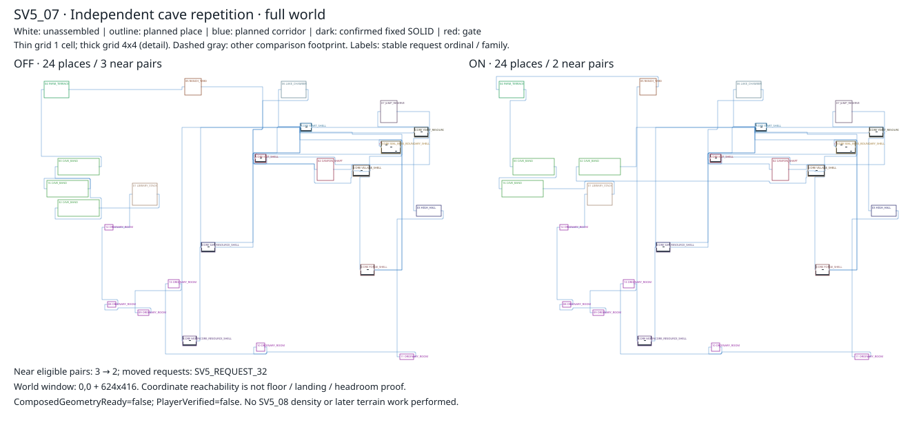
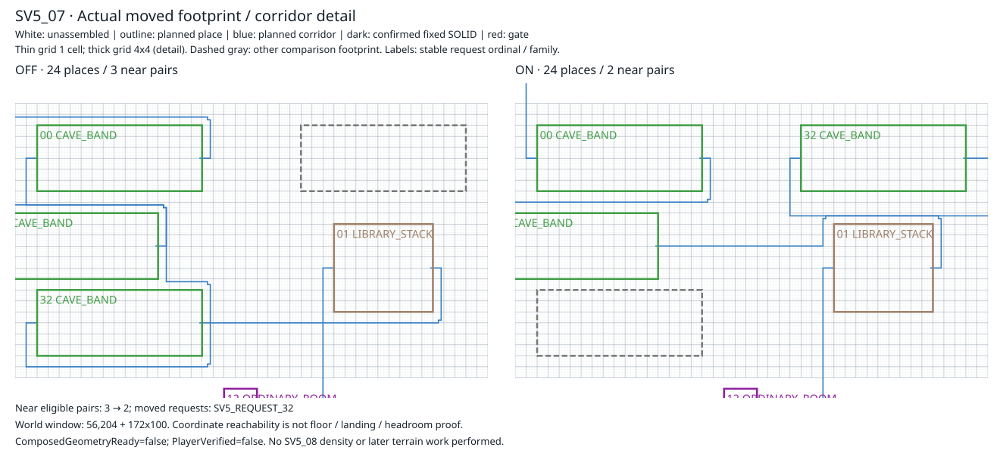

Repeat near pairs OFF 3 → ON 2. Default: NO_ELIGIBLE_REPEAT. No place removed or shrunk. Same numbered request / family color before and after.
Outlines = planned footprints; blue lines = planned corridors; white = unassembled. Not finished terrain or Player evidence.
Full OFF/ON geometry and metrics · Decisions · Pairs


OFF 5d775db39431fc1bcc482f3e867e97aa6eba6232965544715e4422cb7c746c93
ON 94c9f3a353e39984633a755af7842e87989e86dc97c3545ce87a4ac4da4397b7
ComposedGeometryReady=false; PlayerVerified=false. SV5_08 and later work remain pending.